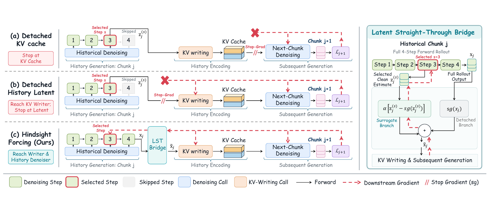

Abstract
The Hindsight Forcing framework
Preserve the full forward rollout. Extend future supervision to historical denoising.

Core insight
History should learn
from what comes next.
Earlier chunks shape every future frame. Their denoising computations should receive feedback from future losses — alongside the context writer that encodes them.
Jointly train context writing and historical denoising.
Retain one denoising graph per historical chunk.
No extra model parameters or inference computation.
Short-video demonstrations
Compare motion, appearance, and structural coherence across eight methods.
Play any video individually, or use the shared controls to compare all methods. Hindsight Forcing is outlined in teal.
Long-video demonstrations
Explore how appearance and motion evolve over a one-minute autoregressive rollout.
Hindsight Forcing Long uses independent denoising-step sampling across training ranks. All other Hindsight Forcing components are preserved. RAVEN is evaluated without CM-GRPO.
Quantitative results
Short-video quality and dynamics, followed by long-video continuation. All evaluation scores are scaled by 100.
Short video · VBench
944 prompts · 5 videos per prompt · 81 frames↑ Higher is better. * Reward Forcing's temporal flickering score is omitted because only one video passed the static filter.
Long video · VBench-Long
128 prompts · 1 video per prompt · 957 framesHindsight Forcing Long achieves a better trade-off between visual quality and motion dynamics, delivering stronger overall performance.
Subject and background consistency are measured within 2-second clips. Hindsight Forcing Long achieves the highest imaging quality among the compared methods; performance varies across dimensions.